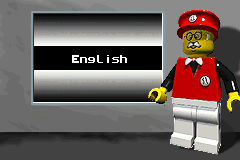

LEGO Island 2 - The Brickster's Revenge (Europe) (En,Fr,De,Es,It,Nl,Sv,Da)
SRAM 256K Save Format Spec gbakit Built-In 💾 MultiBoot 🎮 4P Link
Cartridge Identity
- Game Code
AL2P(FamilyAL2)- Header Title
LEGO ISLAND- Maker / Revision
5Q/ rev0- ROM Size
- 8.0 MiB (8,388,608 B)
- Save Media
SRAM 256K- SHA-256
0adb5cd81f7ea2c001964866132ed26e681d79c98e3fbbf628ca820aad48d2cf- Engine / SDK Group
comm-004(98 families)
Screenshots


Link Cable & Multiplayer Communications
This title contains detected communication capabilities: 💾 MultiBoot 🎮 4P Link.
Detailed protocol specifications, SIO registers, Joybus commands, and MultiBoot sequences are documented in the Link & Multiplayer Reference.
- Multi-Player SIO (4P)
- 16-bit ring network · SIOCNT (
0x04000128) literals:0x002250,0x002278,0x0024a0· SIODATA32/SIOMULTI0 (0x04000120) literals:0x00258c - Single-Cart MultiBoot
- Single-Cartridge MultiBoot (Download Play) client/server handler · Thumb SWI 0x25 (
0xDF25):0x0985e2,0x687f3a,0x68c86a,0x6a478a
Battery Save Format Specification
Open Full Save Format SpecDownload save-format.json
- Specification Coverage
- 3 mapped fields · 0 verified checksum(s) · Confidence: HIGH
- gbakit Built-In Support
- Built-in (AL2P)
gbakit save verify AL2P save.sav
gbakit save decode AL2P save.sav
gbakit save fix AL2P damaged.sav -o repaired.savObserved Battery Save Layout
- Fill Byte & Active Size
0xFFfill · 12,100–12,100 / 32,768 B active (entropy 0.25 bits/B)- Active Offset Ranges
0x0–0x2F43(1 total)- ASCII Magic / Headers
- None detected
- Observed Variable Regions
- 0 bytes across 0 spans: None
- Candidate Checksum/Counter Spans
- None
Text, Fonts & Scene Data
- Primary Text Encoding
- 16-bit / UTF-16LE text (
29ASCII strings ·4Shift-JIS runs) - Font & VWF Indicators
- VWF Width Table 1bpp Font · BIOS SWIs: BitUnPack
0x10:14· LZ770x11/12:210· Huffman0x13:3· RLE0x14/15:11 - Scene & Packaging
52ROM pointer tables (≥32 entries,1≥200) ·4relativeu32TOCs ·395OAM metasprite hits · FourCC:RIFF
Hardware MMIO Subsystems
save_bus_sram_flash0x8001aa8,0x8001b9c
Regional Variants & Revisions (Family AL2)
- LEGO Island 2 - The Brickster's Revenge (USA) (En,Fr) (
AL2E, 8 MiB)